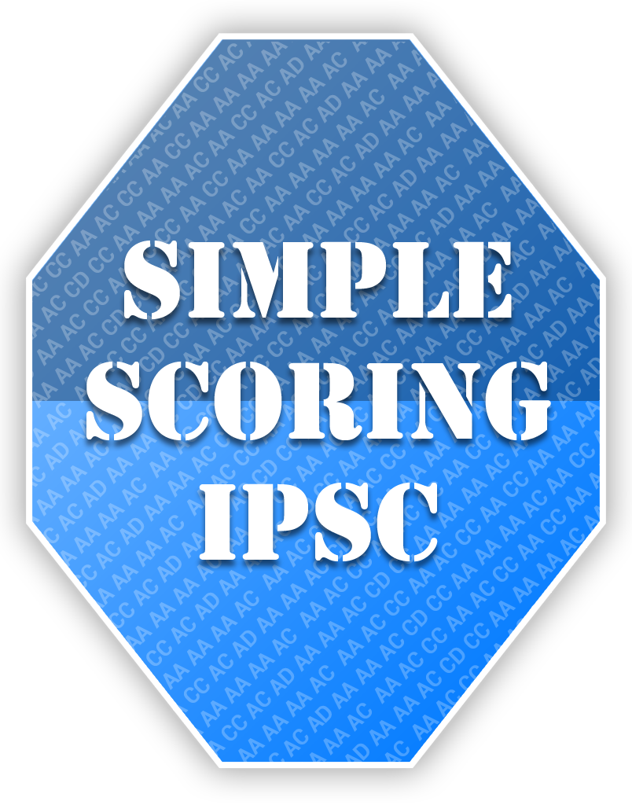
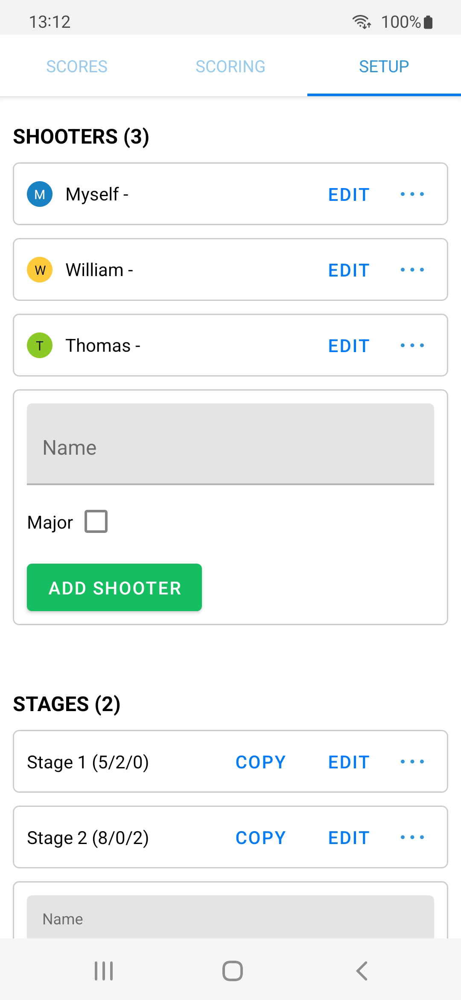
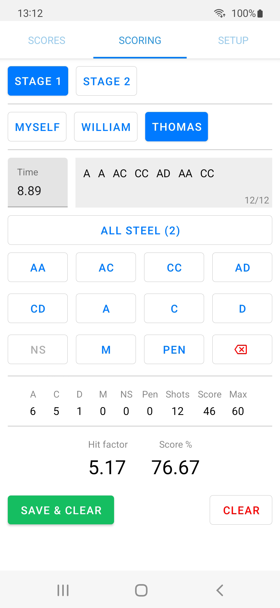
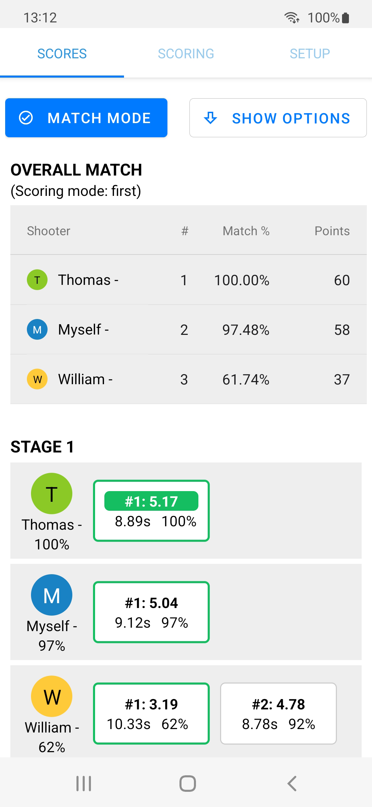
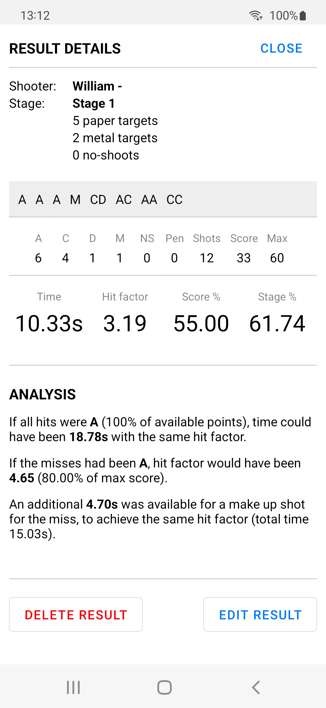

Score stages and save the results during practice or impromptu matches with your friends. Minimal setup.
Free.
No ads.

Designed to be as simple to use as possible on the range; just add a few friends and some stages and you are ready to score and review the results.
Analysis of results that provides what-if scenarios with hit factors and score percentage.
Can be used as a standalone IPSC/USPSA hit factor calculator.
Easy setup

Score just yourself or add a few more shooters.
Add stages with or without target specifications.
Quick scoring

Fast switching between shooters and stages.
Sound confirmation.
View results

Optional match mode and results.
Grouped by stage and shooter.
Tap for details.
Details

View details and analysis/what-if.